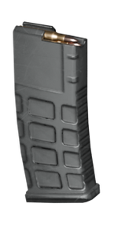
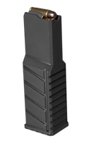
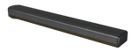
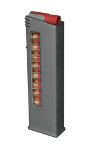

短弹匣
短弹匣是一种弹匣配件，以较低容量为代价提供更好的人体工学和更多备用弹匣。
变体
| Icon | 变体 | Weapon | 解锁等级 | 解锁费用 | 效果 |
|---|---|---|---|---|---|
 |
解放者 | 解放者 Concussive | 武器等级 11 |  7,000 7,000
|
人体工学 +10, 容量 30 发, 9 初始弹匣, 16 最大弹匣, 2.5s 完整换弹, 1.65s 部分换弹 |
| 解放者 | 武器等级 14 | ||||
| 解放者 Penetrator | |||||
| 卡宾枪 | 解放者 卡宾枪 | 武器等级 11 | 7,000
|
人体工学 +10, 容量 30 发, 9 初始弹匣, 16 最大弹匣, 2s 完整换弹, 1.25s 部分换弹 | |
| Suppressor | Suppressor | 武器等级 11 | 7,000
|
人体工学 +10, 容量 30 发, 7 初始弹匣, 12 最大弹匣, 2.5s 完整换弹, 1.8s 部分换弹 | |
 |
捍卫者 | Pummeler | 武器等级 7 | 7,000
|
人体工学 +10, 容量 35 发, 8 初始弹匣, 12 最大弹匣, 2.33s 完整换弹, 1.6s 部分换弹 |
| 捍卫者 | 武器等级 9 | ||||
 |
Knight | Gallant | 武器等级 1 | 0
|
容量 50 发, 5 初始弹匣, 7 最大弹匣, 2.5s 完整换弹, 1.7s 部分换弹 |
| Knight | |||||
 |
Breaker (Regular) | Breaker | 武器等级 12 | 7,000
|
人体工学 +10, 容量 13 发, 7 初始弹匣, 11 最大弹匣, 2s 完整换弹, 1.4s 部分换弹 |
| Breaker 燃烧弹 | |||||
| Breaker (S&P) | Breaker Spray&Pray | 武器等级 14 | 7,000
|
人体工学 +5, 容量 13 发, 12 初始弹匣, 20 最大弹匣, 2s 完整换弹, 1.4s 部分换弹 | |

|
Stoker | Stoker | 武器等级 17 | 13,000
|
容量 25 发, 7 初始弹匣, 13 最大弹匣, 2.3s 完整换弹 |
|
|
Censor | Censor | 武器等级 1 | 0
|
人体工学 +3, 容量 20 发, 6 初始弹匣, 8 最大弹匣, 2.5s 完整换弹, 1.5s 部分换弹 |
|
|
Hyena | Hyena | 武器等级 16 | 13,000
|
人体工学 +11, 容量 10 发, 7 初始弹匣, 9 最大弹匣, 2.25s 完整换弹, 1.3s 部分换弹 |
变更历史
补丁
描述
1.007.000
2026-08-12
变化
- AR-23 解放者, AR-23P 解放者 Penetrator, AR-23C 解放者 Concussive, AR-23A 解放者 卡宾枪,
AR-59 Suppressor- 备用弹匣从 12 增加到 16
- 备用弹匣从 7 增加到 9
- This buff did not apply to the Suppressor. This is a known bug.
- SMG-37 捍卫者、SMG-72 锤击者
- 备用弹匣数量从9增加到12
- 初始弹匣数量从6增加到8
- SMG/FLAM-34 Stoker
- 备用弹匣数量从10增加到13
- 初始弹匣数量从6增加到7
- 将装填持续时间从2.8秒缩短至2.3秒
- SG-225 破碎者、SG-225IE 破碎者燃烧型
- 将弹匣的备用弹匣数从9增加到11
- 将弹匣的初始弹匣数从6增加到7
- SG-225SP千发百中"破裂者
- 备用弹匣数量从16增加到20
- 初始弹匣数量从11增加到12
配件
2x Tube Red Dot • 10x Sniper Scope • 4x Combat Scope • 全息瞄准镜 • 反射式瞄准镜 • 无准镜 • 反射式瞄准镜 Mk2 • 1.5x Tube Red Dot • 机械瞄具